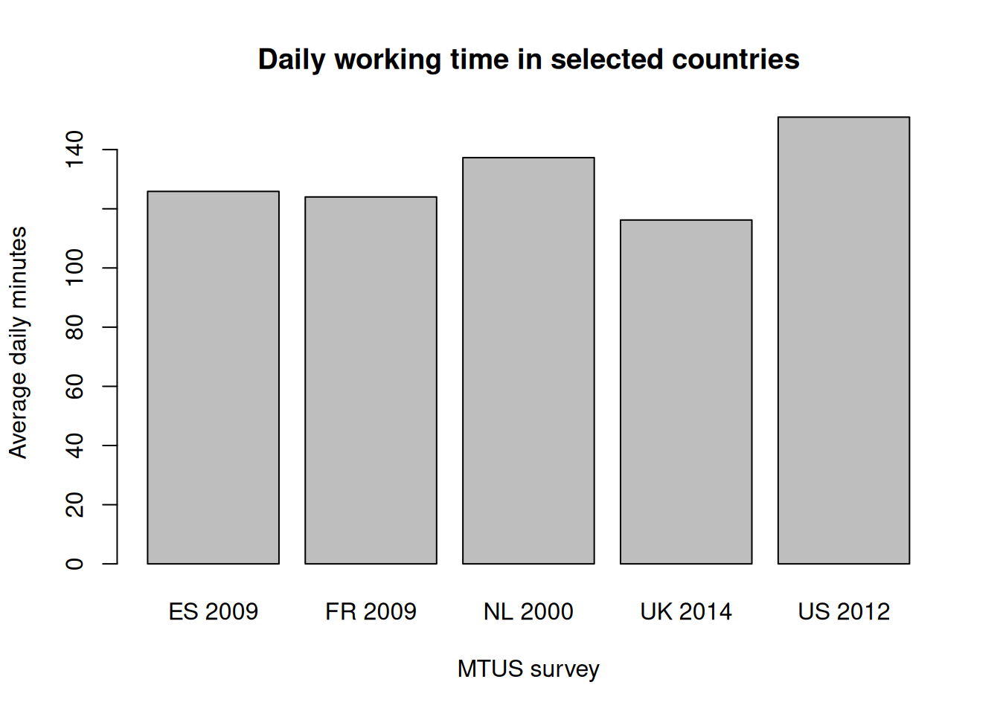
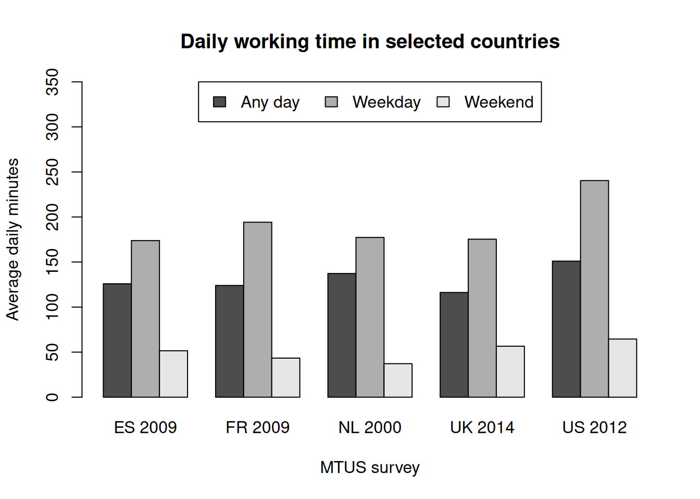
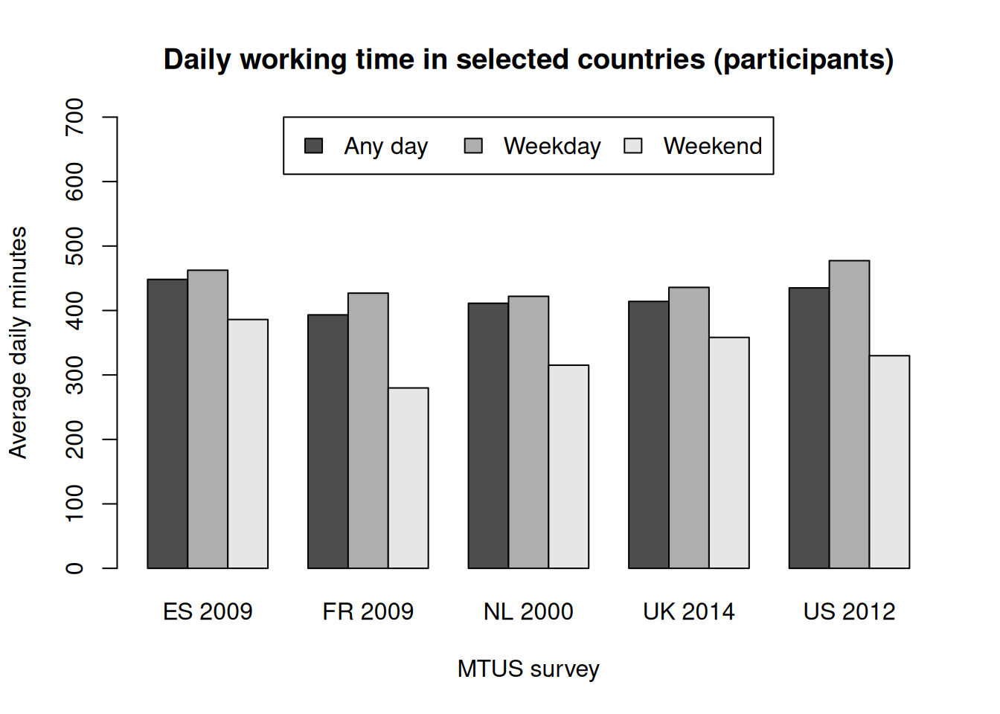
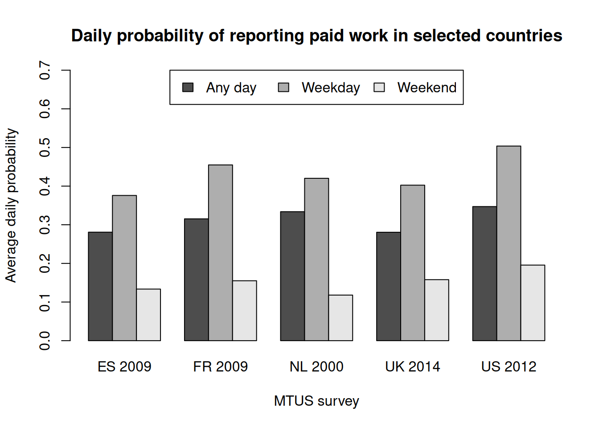
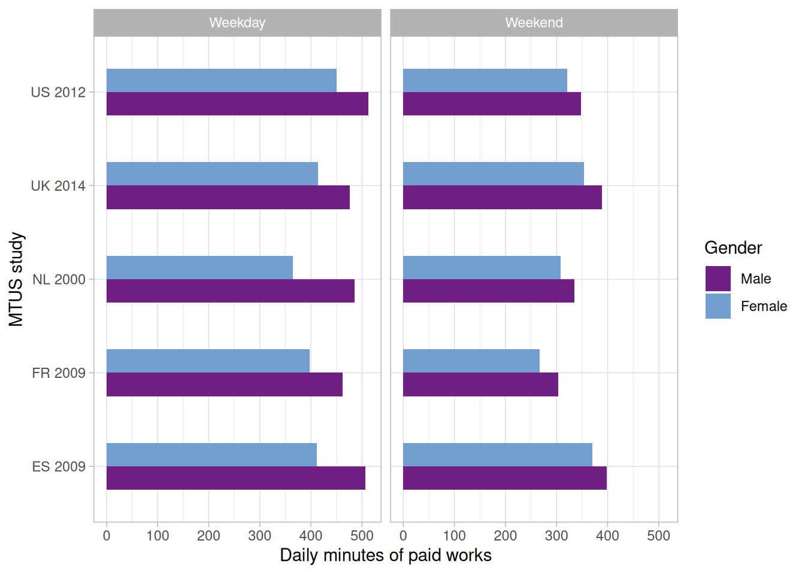
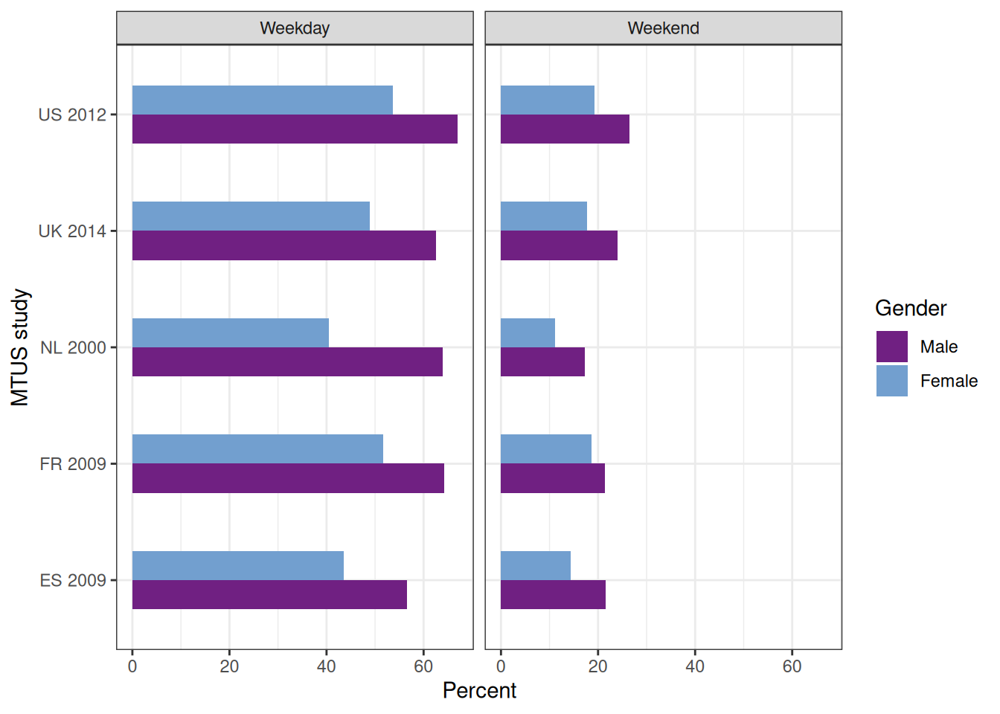

Day 1 Workbook
1. Setting things up
R studio has many functionalities, but for the purpose of this workshop, we will use it merely as a two-panel text editor.
We first need to load the R libraries we are going to use throughout:
- dplyr for data manipulation
- haven for opening stata/SPSS datasets
- ggplot2 for advanced graphic functionsThe next thing is to set up the working directory, and open the dataset. We could also just specify the absolute file paths in each file opening ie read_dta() command every time. The line below works on my computer, but needs to be changed accordingly on your system depending where your files are stored )
For this demonstration, we will be using a subsample of the Multinational Time Use Study - MTUS. We will open the Stata dataset using read_dta() from the haven package, which retains both the original numeric values and Stata’s variable and value labels.
We begin by removing a few variables that we will not be using from the dataset. We also remove the children respondents to keep things as simple as possible:
2. Inspecting the data
Let’s have a look at the data.
There are many observations and few variables: this typically indicates an episode file in long format.
Let’s inspect the variables in the dataset, sequentially…
[1] "country" "survey" "hldid" "persid" "id" "day" "year"
[8] "time" "clockst" "start" "end" "epnum" "main" "sec"
[15] "eloc" "mtrav" "alone" "child" "sppart" "oad" … Or alphabetically
[1] "alone" "child" "clockst" "country" "day" "eloc" "end"
[8] "epnum" "hldid" "id" "main" "mtrav" "oad" "persid"
[15] "sec" "sppart" "start" "survey" "time" "year" Let’s take a first look at the data. We can visualise the first few lines of raw data, without the value labels. More information about the variable definition is available in the MTUS documentation
# A tibble: 6 × 20
country survey hldid persid id day year time clockst start end
<chr> <dbl> <dbl+lbl> <dbl> <dbl> <dbl+lb> <dbl> <dbl> <dbl> <dbl> <dbl>
1 ES 2009 1 1 1 1 [Sund… 2010 240 6 0 240
2 ES 2009 1 1 1 1 [Sund… 2010 20 10 240 260
3 ES 2009 1 1 1 1 [Sund… 2010 10 10.2 260 270
4 ES 2009 1 1 1 1 [Sund… 2010 30 10.3 270 300
5 ES 2009 1 1 1 1 [Sund… 2010 30 11 300 330
6 ES 2009 1 1 1 1 [Sund… 2010 90 11.3 330 420
# ℹ 9 more variables: epnum <dbl>, main <dbl+lbl>, sec <dbl+lbl>,
# eloc <dbl+lbl>, mtrav <dbl+lbl>, alone <dbl+lbl>, child <dbl+lbl>,
# sppart <dbl+lbl>, oad <dbl+lbl>We can have a closer look at the labelled values for the Main (ie primary) activity variable.
imputed personal or household care
396
sleep and naps
209307
imputed sleep
10
wash, dress, care for self
190292
meals at work or school
9358
meals or snacks in other places
212870
paid work-main job (not at home)
62246
paid work at home
10724
second or other job not at home
829
unpaid work to generate household income
29
travel as a part of work
3243
work breaks
5123
other time at workplace
4750
look for work
995
regular schooling, education
8772
homework
8812
leisure & other education or training
2606
food preparation, cooking
96053
set table, wash/put away dishes
52750
cleaning
51951
laundry, ironing, clothing repair
29530
maintain home/vehicle, including collect fuel
21144
other domestic work
31673
purchase goods
41551
consume personal care services
5192
consume other services
4515
pet care (not walk dog)
10120
physical, medical child care
13098
teach, help with homework
904
read to, talk or play with child
4574
supervise, accompany, other child care
1968
adult care
8703
voluntary, civic, organisational act
18467
worship and religion
6701
general out-of-home leisure
1789
attend sporting event
1148
cinema, theatre, opera, concert
2101
other public event, venue
1424
restaurant, caf?, bar, pub
10065
party, social event, gambling
2896
imputed time away from home
292
general sport or exercise
12626
walking
17843
cycling
415
other outside recreation
108
gardening/pick mushrooms
12322
walk dogs
10615
receive or visit friends
46916
conversation (in person, phone)
23909
games (social & solitary)/other in-home social
11637
general indoor leisure
378
art or music
3605
correspondence (not e-mail)
1667
knit, crafts or hobbies
4194
relax, think, do nothing
36461
read
40863
listen to music or other audio content
2011
listen to radio
12149
watch TV, video, DVD, streamed film
148394
computer games
5689
e-mail, surf internet, computing
29548
no activity, imputed or recorded transport
212
travel to/from work
50738
education travel
10104
voluntary/civic/religious travel
9686
child/adult care travel
15880
shop, person/hhld care travel
58982
other travel
82367
no recorded activity
13589 [1] sleep and naps meals or snacks in other places
[3] wash, dress, care for self wash, dress, care for self
[5] cleaning walking
69 Levels: imputed personal or household care sleep and naps ... no recorded activityWe can then explore a few variables, for example the number of episodes by country
… by survey year…
Note that the year the survey was conducted (SURVEY) – may be different from the year the diary was filled in (YEAR):
year
country 2000 2009 2010 2012 2014 2015
ES 0 90512 305210 0 0 0
FR 0 0 468889 0 0 0
NL 286329 0 0 0 0 0
UK 0 0 0 0 283187 193012
US 0 0 0 184740 0 0In order to avoid confusion, let’s create a unique STUDY variable
study
ES 2009 FR 2009 NL 2000 UK 2014 US 2012
395722 468889 286329 476199 184740 We can also explore the distribution of days by retaining only one episode per day
study
id ES 2009 FR 2009 NL 2000 UK 2014 US 2012
1 19253 16195 1813 7673 12373
2 0 11630 1813 7666 0
3 0 0 1813 0 0
4 0 0 1813 0 0
5 0 0 1813 0 0
6 0 0 1813 0 0
7 0 0 1813 0 0And examine it as a proper contingency table, with column percentages
study
id ES 2009 FR 2009 NL 2000 UK 2014 US 2012
1 100.0 58.2 14.3 50.0 100.0
2 0.0 41.8 14.3 50.0 0.0
3 0.0 0.0 14.3 0.0 0.0
4 0.0 0.0 14.3 0.0 0.0
5 0.0 0.0 14.3 0.0 0.0
6 0.0 0.0 14.3 0.0 0.0
7 0.0 0.0 14.3 0.0 0.0Let us now examine the structure of the data
We have:
- people identified with PERSID
- households with HLDID
- sequential diary number ID…
… Within studies
# A tibble: 6 × 9
study hldid persid id time epnum main.f eloc.f alone.f
<chr> <dbl+lbl> <dbl> <dbl> <dbl> <dbl> <fct> <fct> <fct>
1 ES 2009 1 1 1 240 1 sleep and naps at an… others…
2 ES 2009 1 1 1 20 2 meals or snacks in … at an… others…
3 ES 2009 1 1 1 10 3 wash, dress, care f… at an… no oth…
4 ES 2009 1 1 1 30 4 wash, dress, care f… at an… no oth…
5 ES 2009 1 1 1 30 5 cleaning at an… no oth…
6 ES 2009 1 1 1 90 6 walking other… others…# A tibble: 20 × 5
time epnum main.f eloc.f alone.f
<dbl> <dbl> <fct> <fct> <fct>
1 240 1 sleep and naps at another?s home others rep…
2 20 2 meals or snacks in other places at another?s home others rep…
3 10 3 wash, dress, care for self at another?s home no others …
4 30 4 wash, dress, care for self at another?s home no others …
5 30 5 cleaning at another?s home no others …
6 90 6 walking other locations others rep…
7 30 7 other travel travelling others rep…
8 30 8 food preparation, cooking at another?s home others rep…
9 30 9 meals or snacks in other places at another?s home others rep…
10 30 10 watch TV, video, DVD, streamed film at another?s home others rep…
11 60 11 sleep and naps at another?s home others rep…
12 120 12 watch TV, video, DVD, streamed film at another?s home others rep…
13 10 13 watch TV, video, DVD, streamed film at another?s home others rep…
14 140 14 walking other locations others rep…
15 10 15 other travel travelling others rep…
16 40 16 food preparation, cooking at another?s home others rep…
17 50 17 meals or snacks in other places at another?s home others rep…
18 100 18 watch TV, video, DVD, streamed film at another?s home others rep…
19 370 19 sleep and naps at another?s home others rep…
20 240 1 sleep and naps at another?s home others rep…3. Estimating durations
Let’s compute the daily amount of time spent in paid work
We need to flag work episodes. We will be using a broad definition: work is any of the work-related tasks described below carried out either at home or outside home (but not commute).
The relevant MTUS activity codes are
7 -- paid work-main job (not at home)
8 -- paid work at home
9 -- second or other job not at home
10 -- unpaid work to generate household income
11 -- travel as a part of work
12 -- work breaks
13 -- other time at workplaceThe first thing to do consist in flagging work in the episode dataset. One could use RECODE or GENERATE in Stata.
In R, I will use the ifelse() function (case_when() from the dplyr package would also work)
Let’s have WK.T record the duration of any work related episode.
It takes the value 0 if no episode were recorded.
This is the simplest way of doing it in Base R
Another way which may be more parsimonious when recoding several variables simultaneously:
Let’s have a look at the variable
Min. 1st Qu. Median Mean 3rd Qu. Max.
0.000 0.000 0.000 6.296 0.000 1340.000 Min. 1st Qu. Median Mean 3rd Qu. Max.
1.0 20.0 90.0 131.2 210.0 1340.0 The mean seems rather low
… In order to produce valid estimates, we need to first compute the amount of time spent on paid work … for each day of each respondent
We can now produce our first set of estimates and store it in an ad hoc data frame…
We can even plot the results easily

The daily number of minutes in paid work seem a bit low. Could this be due to the fact that we do not differentiate between weekend and weekdays?
Let’s add these to our results:
For technical reasons, in case of multiples bars, barplot() deals better with categories as row names rather than as a variable

As with most time use variables, we need to decide whether we are interested in an overall mean, which takes into account both people who did and did not engage in an activity, or instead a mean that reflects the typical daily working time of those who did work on the day
Let’s repeat the exercise, this time with only those respondents with at least one minute of reported paid work aka ‘Participants’
res.w<-cbind(ep%>%filter(epnum==1 & wk.b>0)%>%
group_by(study)%>%summarise(Part=mean(wk.b)),
ep%>%filter(epnum==1 & wkd=="Weekday" & wk.b>0)%>%
group_by(study)%>%
summarise(Weekday=mean(wk.b))%>%
select(Weekday),
ep%>%filter(epnum==1 & wkd=="Weekend" & wk.b>0)%>%
group_by(study)%>%
summarise(Weekend=mean(wk.b))%>%
select(Weekend)
)
rownames(res.w)<-res.w$study
res.w<-res.w%>%select(-study)
barplot(t(as.matrix((res.w))),beside=T,ylim=c(0,700),
main ="Daily working time in selected countries (participants)",
xlab="MTUS survey",
ylab="Average daily minutes",
legend.text = c("Any day", "Weekday", "Weekend"),
args.legend=list(x="top",ncol=3)
)
These durationas are more realistic, but we need to keep in mind that the samples will differ between estimates. Respondent reporting paid work on diary day may not be exactly the same as those reporting doing shopping (more on this next week)
4. Probability of engaging in paid work
From this, we can easily compute the probability of engaging in paid work on diary day
res.p<-cbind(
ep%>%filter(epnum==1)%>%group_by(study)%>%summarise(p.all=mean(wk.b>0)),
ep%>%filter(epnum==1 & wkd=="Weekday")%>%
group_by(study)%>%
summarise(p.we=mean(wk.b>0))%>%select(p.we),
ep%>%filter(epnum==1 & wkd=="Weekend")%>%
group_by(study)%>%
summarise(p.wk=mean(wk.b>0))%>%
select(p.wk)
)
rownames(res.p)<-res.p$study
res.p<-res.p%>%select(-study)
barplot(t(as.matrix(res.p)),beside=T,ylim=c(0,.7),
main ="Daily probability of reporting paid work in selected countries",
xlab="MTUS survey",
ylab="Average daily probability",
legend.text = c("Any day", "Weekday", "Weekend"),
args.legend=list(x="top",ncol=3)
)
5. Producing grouped estimates by individual characteristics
We first need to load the aggregate (ie day-level) file.
[1] 88865 142We can then add the paid work estimates that we computed earlier. We discard observations not matching.
[1] 87481 144Let’s create a more explicit gender variable
We can produce working-time estimates in one go this time, as we will be plotting the results with ggplot, which is able to exploit directly raw estimation results.
res.g<-dt%>%filter(wk.b>0 & age>=16 & age<=65)%>%
group_by(study,gender,wkd)%>%
summarise(Part=mean(wk.b))
ggplot(data=res.g, aes(x=study, y=Part,fill=gender)) +
geom_bar(stat="identity", width=0.5,position = position_dodge())+
scale_fill_manual(values=c("#702082", "#729fcf","#00A9CE"))+
coord_flip()+
facet_wrap(~wkd) +
labs(fill = "Gender", x="MTUS study", y="Daily minutes of paid works")+
theme_light()
We can follow the same logic to produce a plot of daily percentages of respondents engaging in paid work by gender.
res.pg<-dt%>%filter(age>=16 & age<=65)%>%
group_by(study,gender,wkd)%>%
summarise(Part=round(100*mean(wk.b>0),1))
ggplot(data=res.pg, aes(x=study, y=Part,fill=gender)) +
geom_bar(stat="identity", width=0.5,position = position_dodge())+
scale_fill_manual(values=c("#702082", "#729fcf","#00A9CE"))+
coord_flip()+
facet_wrap(~wkd) +
labs(fill = "Gender", x="MTUS study", y="Percent")+
theme_bw()